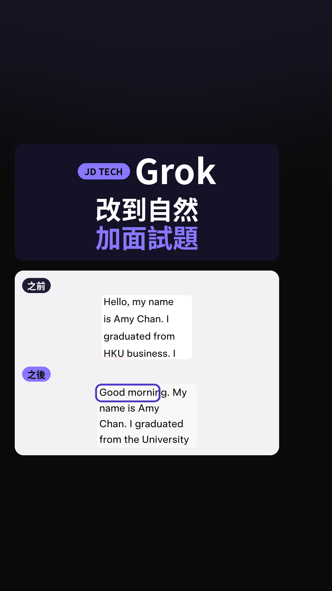
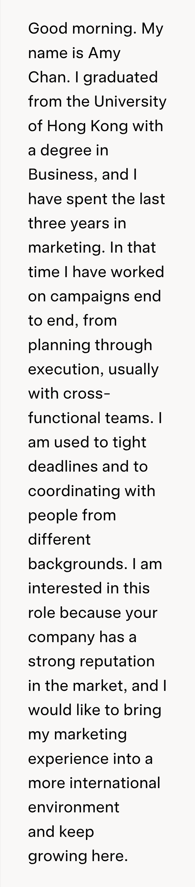
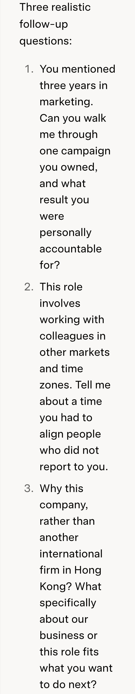

下星期見外資，30 秒英文自我介紹太生硬？用 Grok 改到自然，仲加面試題。下面係今次 Reel 嘅三步，附真實畫面。

Reel 一句講晒：下星期見外資，30 秒英文自我介紹太生硬，Grok 改到自然仲加面試題
你會學到
- 開 grok.com，打你嘅英文自我介紹，撳右下角藍色箭咀送出
- 點樣睇 Grok 回覆嘅自然版（示範開頭「Good morning…」）
- 同一則回覆下面點睇「Three realistic follow-up questions」
開始前準備
- 開 grok.com（官方網頁版；登入同免費用量以當日官方為準）
- 你自己嘅英文自我介紹草稿（示範用虛構人物 Amy Chan，唔好照抄）
- 見工前預留時間自己核對事實同 rehearsing
3 步做法
打介紹撳送出：開 grok.com，喺輸入框打你嘅英文自我介紹（示範用虛構人物 Amy Chan），撳右下角藍色箭咀送出。
示範草稿刻意寫得生硬，例如「I am hardworking and team player」，方便對比改寫前後。
真實畫面（2026-10-09 自行截圖）：打好自我介紹，撳右下角藍色箭咀送出。 睇改寫版：Grok 回覆自然版，開頭「Good morning…」，語氣似真人講，唔再一串「I am hardworking」。
示範回覆會補上畢業院校全名、工作經驗同動機，但內容可能唔準，見工前一定要改成你自己嘅事實。

真實畫面（2026-10-09 自行截圖）：睇改寫版，開頭「Good morning…」。 睇面試題：同一則回覆下面有「Three realistic follow-up questions」，列出 3 條面試官可能追問嘅題。
示範題圍繞經驗、跨時區協作、同「點解揀呢間公司」。你可以照呢三條 rehearsing，但答法要用你自己嘅真實例子。

真實畫面（2026-10-09 自行截圖）：同一則回覆下面睇「Three realistic follow-up questions」。
常見錯誤／注意事項
- 示範資料全部虛構：Amy Chan、HKU、三年 marketing 都係示範用，唔好當真實履歷照抄。
- AI 可能改錯或者寫大話：見工前請自己核對每一句事實、年資同公司細節。
- 免費用量同登入要求：以 Grok／xAI 官方當日說明為準；官方寫 Grok 可以免費開始用，付費計劃會提高用量上限。
- 唔好交私人敏感資料：身分證號、真實住址、未公開薪金等唔好貼落對話。
香港用戶留意
示範喺瀏覽器開 grok.com。登入方式、地區可用性同免費／付費用量會變，以官方 FAQ 為準；呢頁唔提供任何地區繞過建議。
官方說明
- Grok（官方網頁版 grok.com）
2026-10-09 核實：官方網頁助手入口；示範喺呢度打自我介紹同睇回覆 - Welcome to Grok（xAI 官方說明）
2026-10-09 核實：官方寫 Grok 可喺 grok.com 同 iOS／Android App 使用；可免費開始，付費計劃提高用量 - FAQ — Grok Website / Apps（xAI 官方）
2026-10-09 核實：網頁／App 常見問題（帳戶、用量、計費等）；具體額度以官網當日為準
（以上連結當日逐條打開核對；介面同額度可能更新，以官方為準）
原帖
睇原 Reel ↗（2026-10-09 發佈）